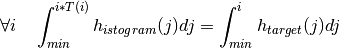
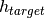
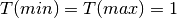
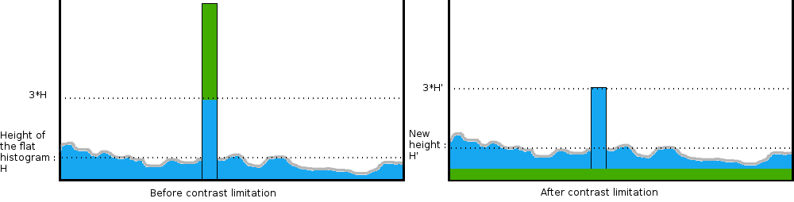

Enhance local contrast¶
Principles¶
Sensor images often have a wide dynamic range. While it is helpful to have high precision for complex processing, it is generally difficult to display high dynamic images, even on modern screen as the dynamic range for basic screen is of 8 bits while images can be encoded using 12 or 16 bits (or even more!).
{kind=link}
{kind=link}
The ContrastEnhancement application aims to reduce the image dynamic by reorganizing it in a smarter way than just linear compression and improve the local contrast and enhance the definitions of edges.
{kind=link}
{kind=link}
The equalization of histogram creates a look up table in order to maximize the
dynamic. The target histogram is perfectly flat. The gain applied on each pixel
comes from the computation of the transfer function  such that :
such that :

where  is the corresponding flat histogram with the constraint that white and black are still white and black after equalization :

You can apply this transformation with the ContrastEnhancement application:
otbcli_ContrastEnhancement -in input_image.tif
-out output_image.tif
-spatial global
It compresses the dynamic without losing details and contrast.
Advanced parameters¶
The ContrastEnhancement provides different options to configure the contrast enhancement method. Let us see what they are for:
First what you want to equalize. Two modes are available:
- luminance: on 3 band images, the equalization will be done on a single band which will be a composition of the original bands. The computed gain will then be applied to the different bands. The classical use of this method is to conserve the ratio between the different colors and conserve the hue.
- channel: each band is equalized independently.
The other option is the local equalization. You can choose a window size that will be used to split the image into tiles and histograms will be computed over those tiles. Gain will be interpolated between the adjacent tiles in order to give a smooth result.
otbcli_ContrastEnhancement -in input_image.tif
-out output_image.tif spatial.local.h 500
-spatial.local.w 500
-mode lum
The ContrastEnhancement application also offers a way of limiting the contrast by adjusting the original histogram with the hfact parameter. The limitation factor represents the limit height that any bucket of the histogram can have; the application computes the height of the flat histogram and the maximal height is the limitation factor time this “flat height”.

Finally, you can ignore a particular value with the nodata parameter, and also manually set your minimum and maximum value. Any value out of bound will be ignored.